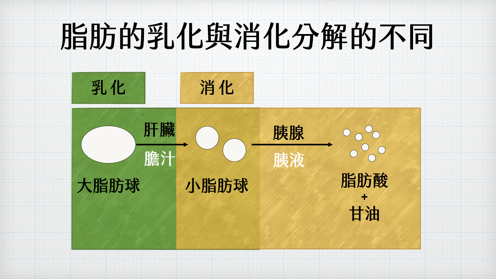

消化器官學習頁面 - 膽汁乳化作用
乳化是指原本不容易混合的油和水，在乳化劑的作用下變得均勻分散的現象。生活中像沙拉醬、牛奶、乳液等都是乳化的例子。
在人體中，膽汁中的膽鹽能將大油滴分成許多小油滴，讓脂肪表面積變大，脂肪酶更容易作用，幫助脂肪的分解。
不過要注意，乳化只是讓油脂更容易被消化，並不是一種真正的消化作用。
而且膽汁是由肝臟製造，膽囊只有儲存膽汁的功能而已。

📝 學習測驗
分泌膽汁的器官：
儲存膽汁的器官：
分解脂肪的消化液：
乳化脂肪的消化液：